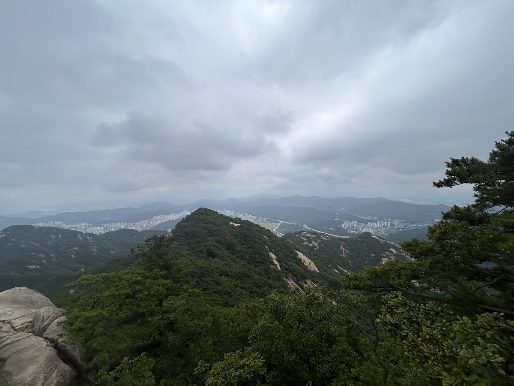
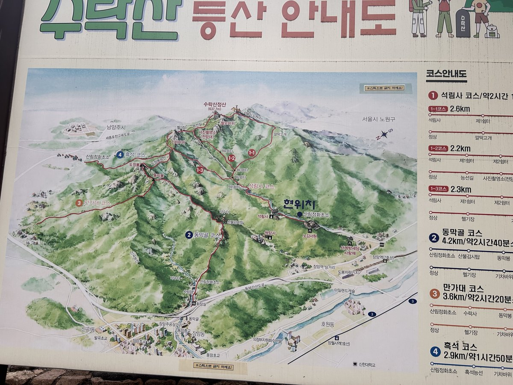
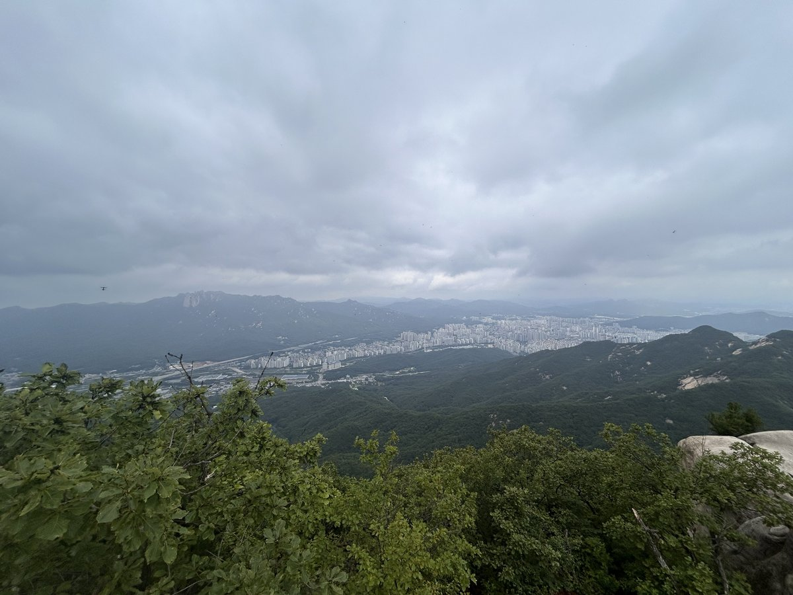
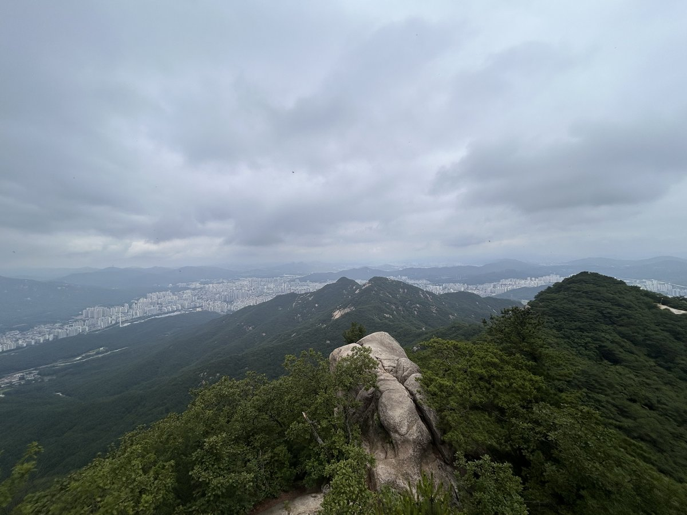
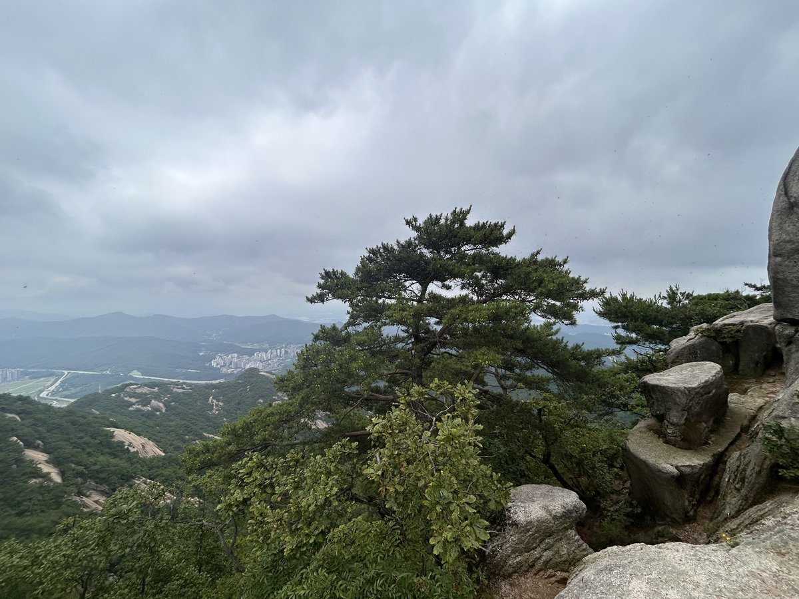
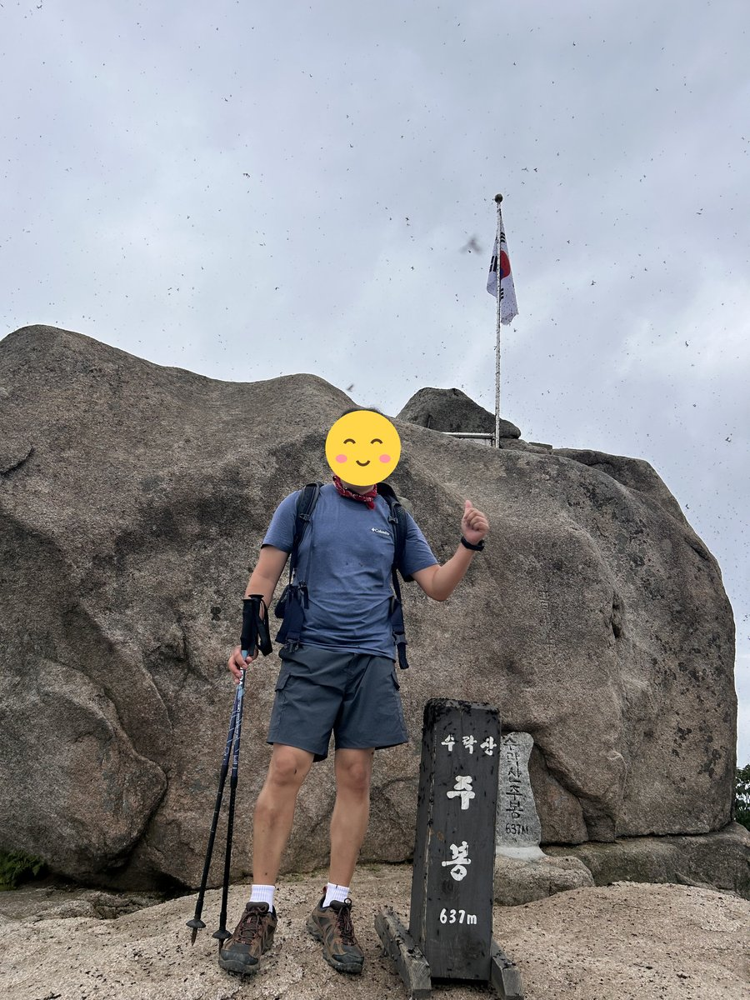
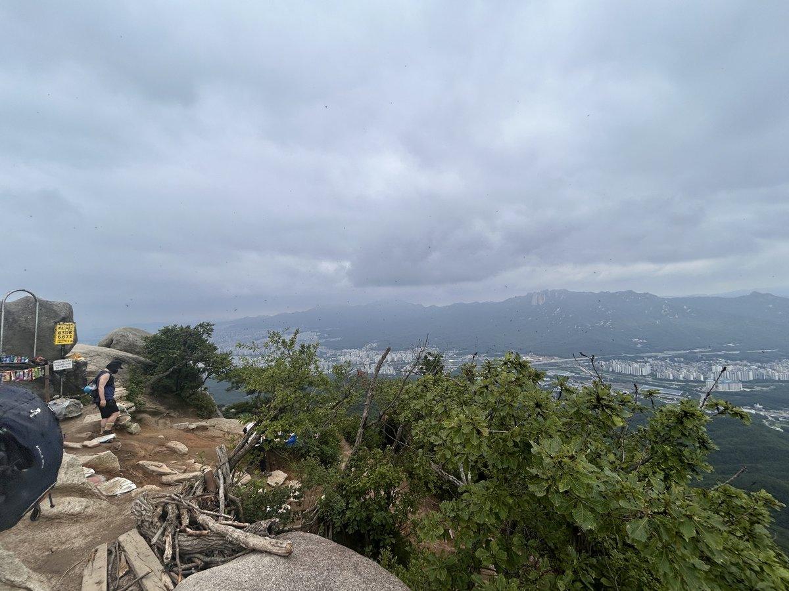
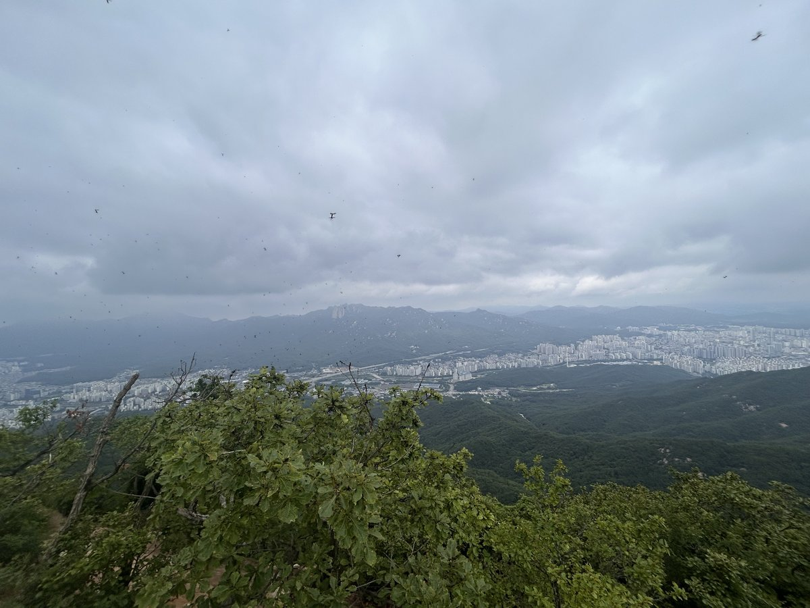
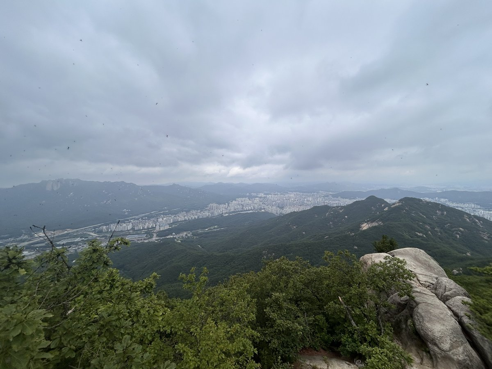
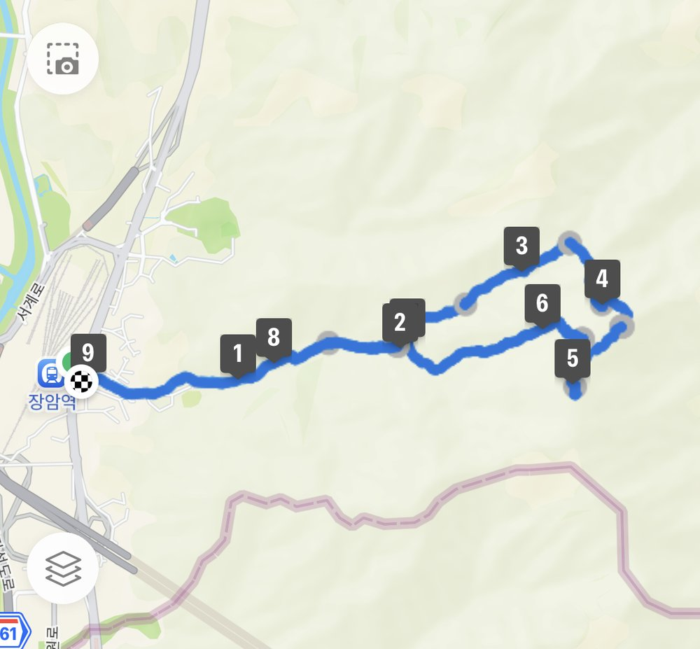

수락산은 서울 노원구와 의정부·남양주 경계에 걸친 산으로, 지하철 7호선으로 양쪽 들머리에 모두 닿습니다. 도봉산·북한산과 함께 서울 동북부 산행의 한 축입니다.
상징은 기차바위입니다. 높이 20m의 수직 화강암 암벽으로, 가운데 홈이 파여 있어 홈통바위라고도 불립니다. 밧줄을 잡고 오르는 구간이라 초보자에게는 부담이 됩니다.
장암역에서 석림사를 지나 기차바위로 붙는 코스는 2.2km로 가장 짧지만 그만큼 급경사입니다. 부담을 줄이려면 수락산역에서 노원골로 오르는 4.6km, 2시간 30분 코스를 고르세요.
등반기록
장암역 → 서계 박세당 사랑채 → 노강서원 → 석림사 → 1쉼터 → 기차바위 옆길 → 정상 → 깔딱고개 → 2·3쉼터 → 석림사 → 노강서원 → 장암역
장암역에서 출발
코스: 장암역 → 서계 박세당 사랑채 → 노강서원 → 석림사 → 1쉼터 → 기차바위 옆길 → 정상 → 깔딱고개 → 2·3쉼터 → 석림사 → 노강서원 → 장암역.
주차장은 장암역(7호선) 공용주차장(유료)에 주차하고 올라감.

기차바위 대신 옆길로
정상 부근 기차바위 길로 올라가려다가, 급경사에 놀란 집사람이 올라가다 포기하고 옆길로 올라감. (등산 초보자들은 이 길은 반드시 피하시길 — 위험해 보임)



수락산 정상, 주봉 637m
정상 부근에서는 이날 날씨가 흐린 상태에서 러브버그가 기승을 부려 도저히 서 있을 수 없을 정도였음. 사진만 빨리 찍고 내려가야 했음.




깔딱고개로 하산
깔딱고개와 2·3쉼터를 거쳐 석림사, 노강서원을 지나 장암역으로 하산. 총 9.06km, 5시간 45분이 걸림.

다음에 갈 사람을 위한 팁
- 기차바위 길은 급경사라 등산 초보자는 반드시 피하세요. 옆길(우회로)로 올라갈 수 있어요.
- 차를 가져간다면 장암역(7호선) 공용주차장(유료)을 이용하면 돼요.
- 초여름에는 정상 부근에 러브버그가 많을 수 있어요.
이 산의 포인트
- 기차바위(홈통바위) — 높이 20m 수직 암벽
- 장암역 코스는 2.2km 최단이자 최급경사
- 수락산역 노원골 코스는 완만한 대안
- 7호선으로 양쪽 들머리 접근 가능
등산 코스
| 코스 | 거리 | 소요 | 난이도 |
|---|---|---|---|
| 장암역 → 기차바위 (최단) 장암역 → 석림사 → 계곡 → 안부 삼거리 → 기차바위 → 정상 |
약 2.2km(편도) | 1시간 30분 | 상 |
| 수락산역 노원골 코스 수락산역 → 노원골 → 능선 → 정상 |
약 4.6km(편도) | 2시간 30분 | 중 |
| 계곡 코스 (입문) 수락산 계곡길 → 능선 → 정상 |
약 5km | 2시간 30분 내외 | 하 |
인증장소
수락산 정상 표지석 앞에서 인증합니다.
가는 길
- 자가용
- 주차 공간이 협소하므로 지하철을 권합니다.
- 대중교통
- 7호선 장암역 또는 수락산역에서 도보로 접근합니다.
주차장
- 수락산 공영주차장(장암)서울 노원구 상계동
규모가 작습니다. 7호선 수락산역·장암역에서 걷는 편이 훨씬 낫습니다.
- 청학리 주차장경기 남양주시 별내면 청학리
남양주 쪽 들머리입니다.
주차 요금과 면수는 자주 바뀌고 성수기에는 임시 주차장·셔틀이 운영되기도 합니다. 출발 전에 지도 앱이나 공원 사무소로 한 번 더 확인하세요.
맛집
서울 노원·남양주 경계라 향토음식은 없습니다. 다만 산 아래 등산 상권에 만두전골과 감자수제비, 손칼국수 집이 자리 잡고 있습니다.
- 엄마손칼국수들머리에서 1.7km서울특별시 노원구 상계로39길 5 (상계동)
- 응순가재골수제비들머리에서 1.7km서울특별시 노원구 동일로242길 100
- 평양칼국수들머리에서 1.9km서울특별시 노원구 동일로242길 8-4 (상계동)
- 우리나라들머리에서 2.3km경기도 의정부시 동일로128번길 11 (장암동)
- 목향원들머리에서 2.5km경기도 남양주시 덕릉로1071번길 34-11 (별내동)
한국관광공사에 등록된 음식점입니다. 맛집 순위가 아니며, 영업시간과 휴무일은 바뀔 수 있으니 먼 길이라면 미리 전화해 보세요.
언제 가면 좋은가
봄가을이 가장 좋습니다. 기차바위는 겨울 결빙기와 비 온 뒤에 특히 위험하니 우회로를 고려하세요.
알아두면 좋은 것
- 기차바위 구간은 밧줄을 잡아야 하므로 장갑이 필요합니다.
- 자신이 없으면 기차바위를 우회하는 길을 이용하세요.
- 지하철로 들머리와 날머리를 다르게 잡을 수 있어 종주하기 편합니다.